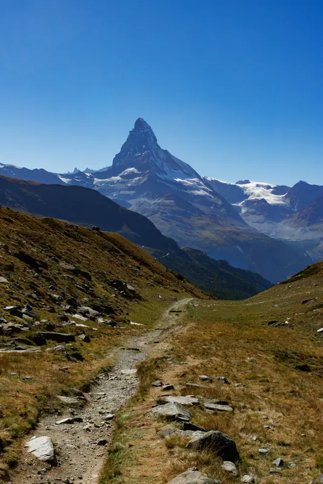
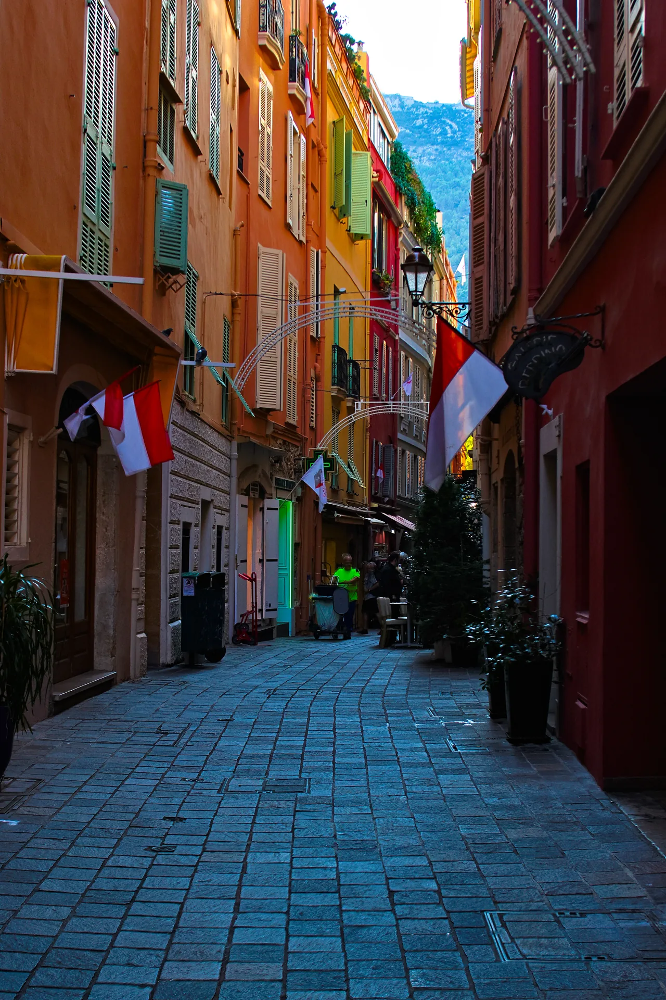

View Edition
Alpine & Riviera

A back street in the old town — the Rock — above the port of Monaco, early morning. The flags are the Monegasque bicolour: red and white. At this hour the principality had not yet decided to perform its customary role of being Monaco. The cafes were preparing but not open. The street was quiet.
The mountain that closes the far end of the street is the Maritime Alps — the same range that the Corniche roads work their way across above Nice and Menton. Monaco occupies a rock between the sea and those mountains. The compression of scale is constant: the width of the principality at its widest point is approximately two kilometres.